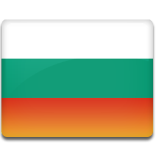

Васил Левски

Васил Иванов Кунчев роден на 18 юли 1837 г. в Карлово, известен като Васил Левски (на стар правопис: Василъ Лѣвскій), е български национален герой. Той е идеолог и организатор на българската национална революция, основател на Вътрешната революционна организация (ВРО). Известен е и като Апостола на свободата, заради организирането и разработването на революционна мрежа за освобождаване на България от османско владичество. Пътува по страната и създава частни революционни комитети, които да подготвят обща революция.Неговата мечта е чиста и свята република, в която всички да имат равни права, независимо от своята народност и вероизповедание.

На 3 март 1862 година. заминава за Сърбия и взема участие в Първата българска легия на Раковски в Белград. Запознава се отблизо с бунтовните среди на българската емиграция. Заради своята ловкост и храброст по време на сраженията с турците за белградската крепост Васил получава името Левски (според легендата е направил „лъвски“ скок по време на военни упражнения в Сърбия). На този етап изпитва силно влияние на Раковски и възприема идеята за организиране на чети, чрез които да се вдигне народът на въстание. След разтурянето на легията се присъединява към четата на дядо Ильо войвода. През 1863 година заминава за Румъния и след кратък престой се завръща в България. През пролетта на 1864 година, навръх Великден в Сопот, Левски в присъствието на най-близките си приятели сам отрязва дългите си монашески коси. От този момент той става мирски дякон (служител, помощник) на свободата Васил Левски.

На 22 септември 1872 година. Димитър Общи организира обир на турската поща в Арабаконак. Левски е против, но е подкрепен единствено от поп Кръстю Никифоров. Залавянето на участниците нанася тежък удар на революционната организация. Левски получава нареждане от БРЦК и Каравелов за вдигане на въстание, но отказва да го изпълни и решава да прибере архивите на ВРО от Ловеч и да се прехвърли в Румъния. На 27 декември 1872 година. бива заловен от турската полиция до Къкринското ханче (източно от Ловеч). При залавянето му Левски притежава редовно тескере за пътуване, дадено му от Малък Добри Койнов от ловешката махала Дръстене, но го гълта, за да го скрие от турците.Съдът осъжда Левски на смърт чрез обесване. На 18 февруари 1873 година. Присъдата е изпълнена в околностите на София. Мястото на обесването на Васил Левски се намира в центъра на днешна София, където е издигнат негов паметник.


Той никога няма да бъде забравен,няма да забравим и неговото дело, благодарение на което ние сме свободна и велика държава.
